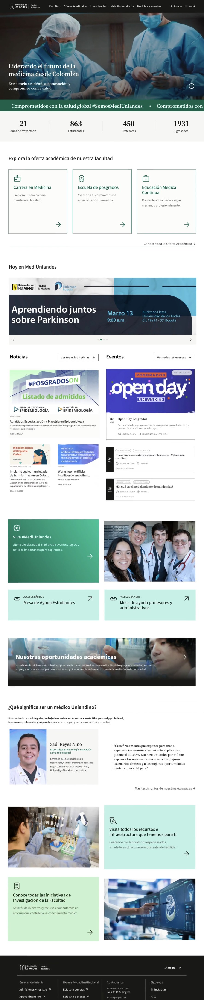
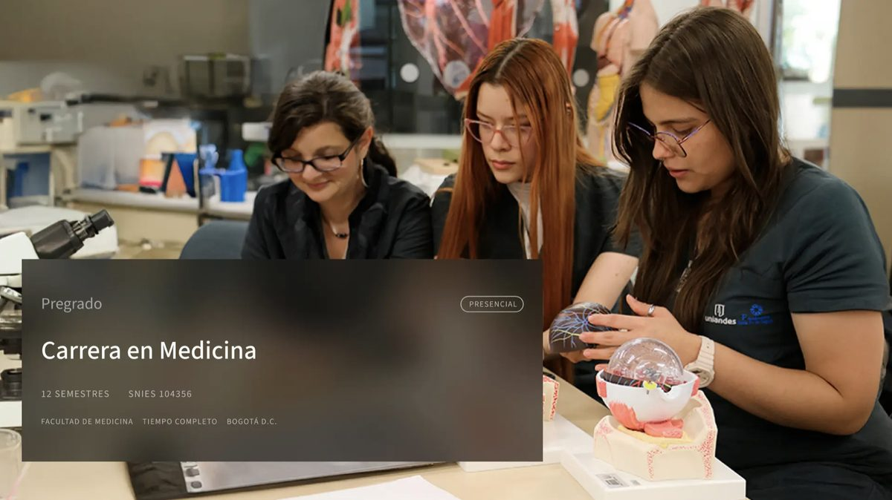
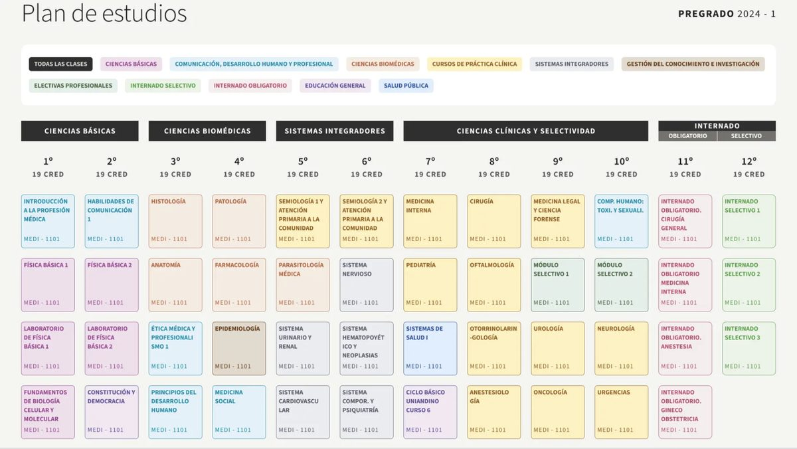
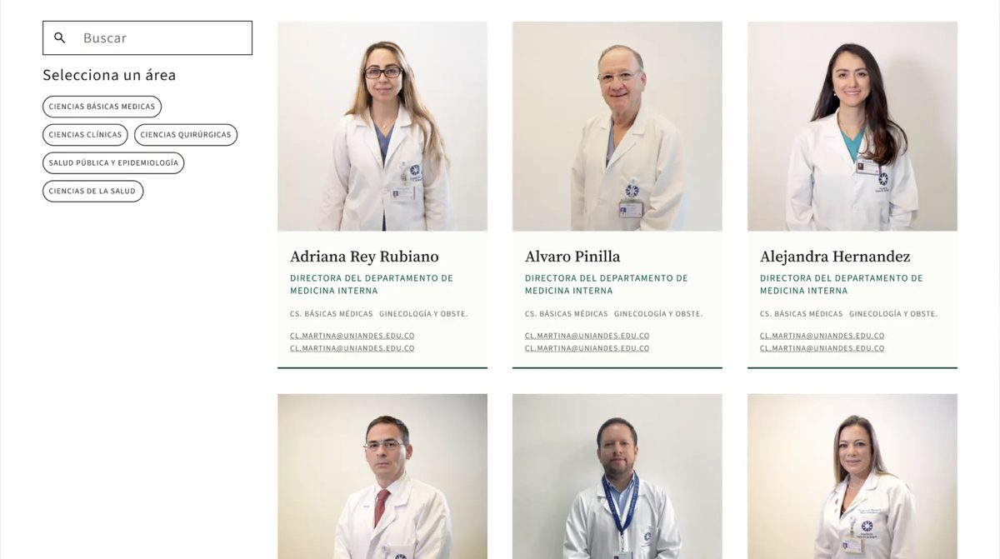
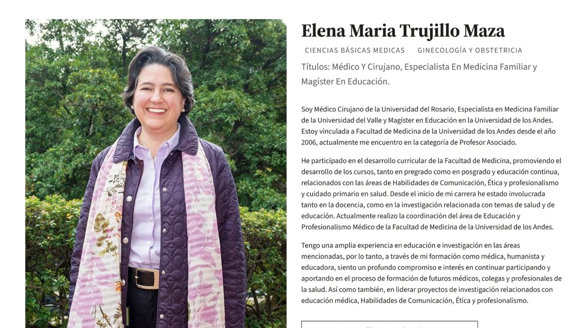

Caso 04 · Diseñadora UX · La Clínica, Uniandes · 2024–2025Case 04 · UX Designer · La Clínica, Uniandes · 2024–2025
Un sitio pensado para cada audiencia.A website designed for each audience.
Rediseño del sitio web de la Facultad de Medicina de la Universidad de los Andes. Mi foco fue la estrategia: entender qué necesita cada audiencia y convertirlo en la base de la arquitectura de información y del prototipo.Redesign of the School of Medicine website at Universidad de los Andes. My focus was strategy: understanding what each audience needs and turning it into the foundation for the information architecture and the prototype.
- RolRole
- Diseñadora UX · investigación, estrategia y co-creaciónUX Designer · research, strategy and co-creation
- EquipoTeam
- En dupla con Juan David Ferro (UX/UI), bajo el liderazgo de Víctor Gómez y en sinergia con Juan Pablo Correa y Angélica Hernández.Paired with Juan David Ferro (UX/UI), led by Víctor Gómez and in synergy with Juan Pablo Correa and Angélica Hernández.
- MétodoMethod
- Taller de estrategia, Jobs To Be Done, sesiones de co-creación y pruebas de usabilidadStrategy workshop, Jobs To Be Done, co-creation sessions and usability testing
- EntregableDeliverable
- Estrategia digital por audiencia, arquitectura de información, taxonomía y prototipo de alta fidelidadDigital strategy by audience, information architecture, taxonomy and high-fidelity prototype
El retoThe challenge
Un mismo sitio para personas que buscan cosas muy distintas.One website for people looking for very different things.
El sitio de la Facultad tenía que responder a aspirantes, estudiantes, egresados, profesores y administrativos. Antes de diseñar pantallas había que acordar con todos qué debía lograr el sitio y para quién.The School's website had to serve prospective students, students, alumni, faculty and staff. Before designing screens, everyone had to agree on what the site should achieve, and for whom.
Proceso y mi aporteProcess and my role
De la estrategia al prototipo, co-creando con la comunidad.From strategy to prototype, co-creating with the community.
01
Taller de ADN digitalDigital DNA workshop
Diseñé y facilité el taller con las cinco audiencias para construir la estrategia y priorizar objetivos por perfil.I designed and facilitated the workshop with the five audiences to build the strategy and prioritise goals by profile.
02
Jobs To Be DoneJobs To Be Done
Traduje la estrategia a Jobs To Be Done por perfil, con tácticas y acciones concretas para guiar el diseño.I translated the strategy into Jobs To Be Done by profile, with concrete tactics and actions to guide the design.
03
Co-creación y validaciónCo-creation and validation
Lideré 5 sesiones con más de 50 participantes, incluida la prueba de usabilidad.I led 5 sessions with 50+ participants, including usability testing.
04
Arquitectura y prototipoArchitecture and prototype
En dupla con el diseñador UX/UI, definimos la arquitectura de información y la taxonomía que sostienen el prototipo.Together with the UX/UI designer, we defined the information architecture and taxonomy behind the prototype.
La estrategiaThe strategy
Una personalidad clara y seis objetivos para el sitio.A clear personality and six goals for the website.
Del taller salió la personalidad de la estrategia digital, que luego guió cada decisión de contenido y arquitectura.The workshop defined the personality of the digital strategy, which then guided every content and architecture decision.
Empatía, ética y comunicación efectiva.Empathy, ethics and effective communication.
Excelencia científica y vanguardia.Scientific excellence and cutting edge.
Adaptabilidad y trabajo en equipo.Adaptability and teamwork.
La propuestaThe proposal
Un sitio que responde primero a lo que cada audiencia vino a buscar.A website that answers first what each audience came for.
La estrategia se tradujo en un home con accesos directos por audiencia y en páginas clave como la oferta académica, el plan de estudios interactivo y el directorio de profesores, construidas con el sistema de diseño de la universidad.The strategy became a home page with direct paths by audience and key pages such as the programmes, an interactive curriculum and a faculty directory, built with the university's design system.





Diseño visual en dupla con Juan David Ferro (UX/UI).Visual design in partnership with Juan David Ferro (UX/UI).
ResultadosResults
Un prototipo listo para implementar, respaldado por la comunidad.A ready-to-build prototype, backed by the community.
puntaje de usabilidad con aspirantes, sobre 100usability score with prospective students, out of 100
personas en pruebas de usabilidad remotaspeople in remote usability tests
participantes en co-creación y validaciónparticipants in co-creation and validation
EntregadoDelivered
Prototipo de alta fidelidadHigh-fidelity prototype
Con componentes reutilizables del sistema de diseño de la universidad y una estrategia clara por audiencia que lo sustenta.With reusable components from the university's design system and a clear strategy by audience behind it.
ContextoContext
Implementación a cargo de la FacultadImplementation led by the School
Nuestro alcance terminó con la entrega del prototipo. La implementación y evolución del sitio quedó en manos de la Facultad, por lo que la versión publicada hoy ha cambiado respecto al diseño.Our scope ended with the prototype handover. The School took over implementation and evolution, so the live site has since changed from the design.